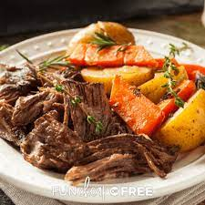

Pot Roast

Description
Pot roast is an American beef dish made by slow cooking a usually tough
cut of beef in moist heat. Tougher cuts such as chuck steak, bottom round, short
ribs and 7-bone roast are preferred for this technique.
Ingredients
- 1 Tbsp of Olive oil
- beef
- carrots
- stalks of celery
- beef broth
Steps
- preheat oven
- season that bad boy
- throw all your veggies in
- wrap it in about 2 pounds of tin foil
- lastly throw it on the traeger and let that baby ROAST